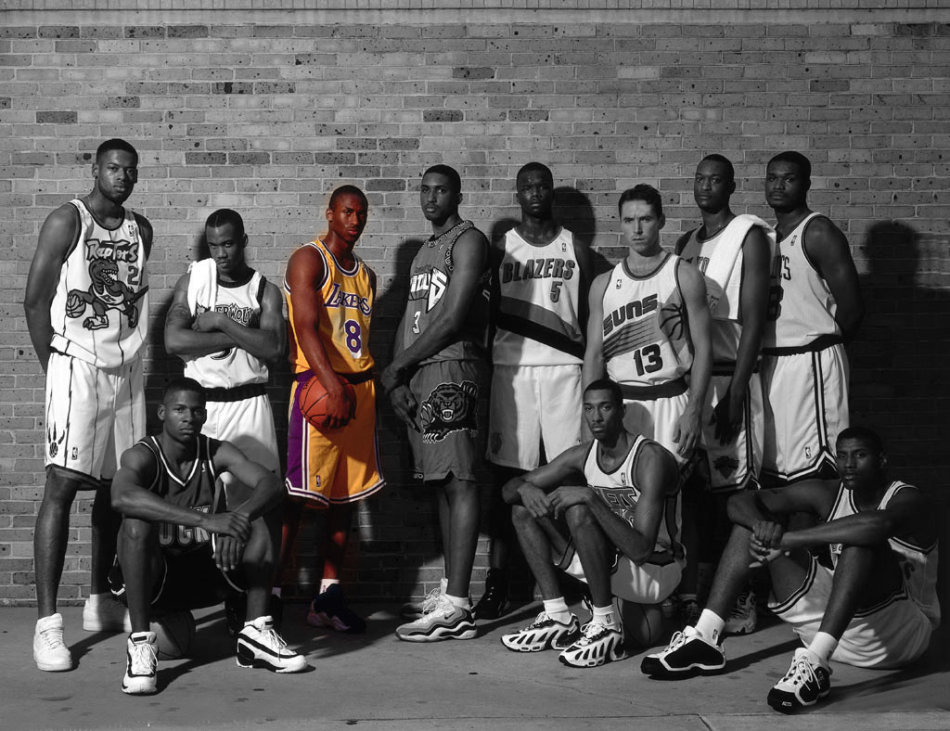
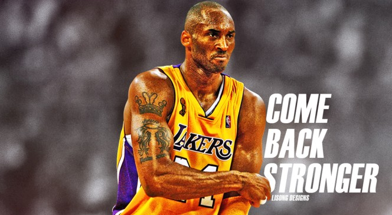
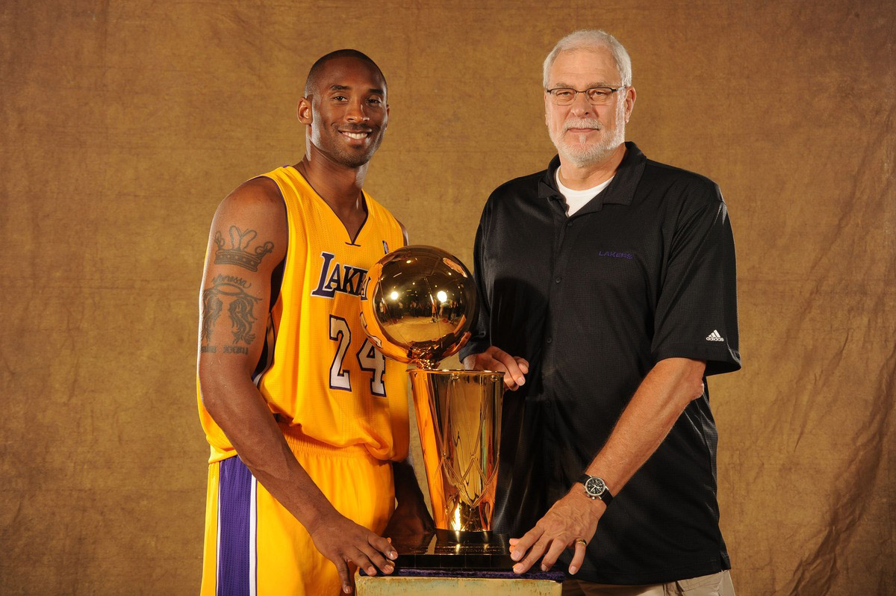
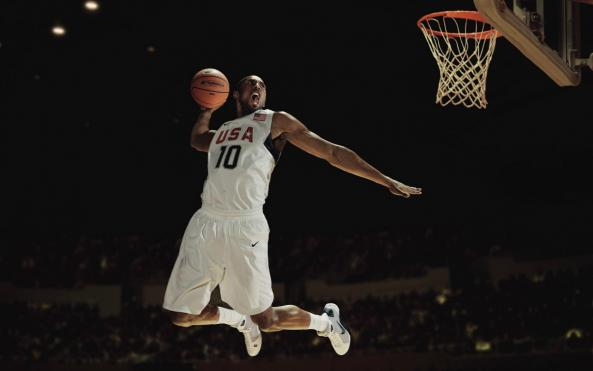
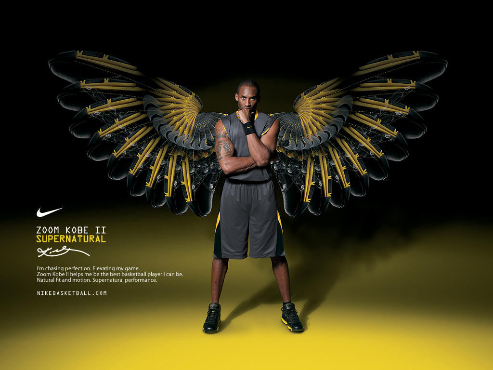
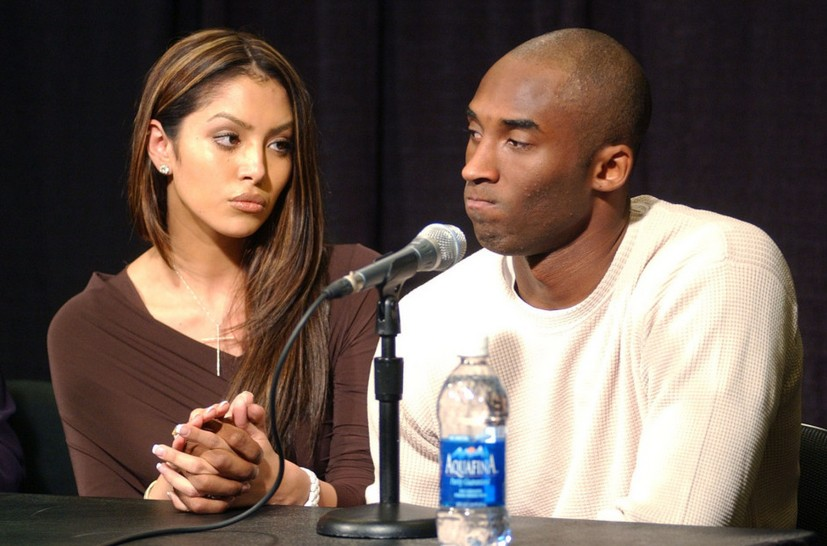
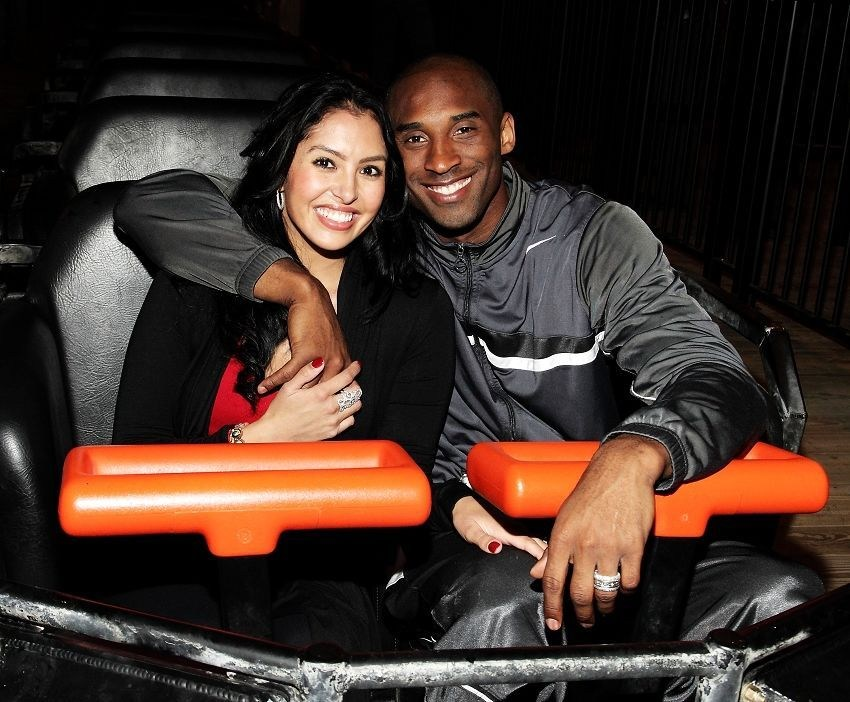

科比·布莱恩特
科比·布莱恩特（英语：Kobe Bryant，1978年8月23日－）是一名已退役的美国NBA篮球传奇球星，普遍被认为是历史上最有资格与“篮球之神”迈克尔·乔丹(Michael Jordan)相提并论的球员。有“黑曼巴”、“小飞侠”之称。
科比·布莱恩特（英语：Kobe Bryant，1978年8月23日－）是一名已退役的美国NBA篮球传奇球星，普遍被认为是历史上最有资格与“篮球之神”迈克尔·乔丹(Michael Jordan)相提并论的球员。有“黑曼巴”、“小飞侠”之称。
科比是前费城76人队篮球员乔·布莱恩特的儿子。科比的父母使用了他们在餐馆菜单上看到的名品－日本的神户牛排（Kobe steak）为儿子命名。根据科比的自述，他从四岁开始已学会打篮球；六岁时全家移居到意大利，他的父亲在那里开始了他的欧洲职篮生涯。科比逐渐适应了意大利的生活方式，并且能够说流利的意大利语及西班牙语，更曾认为意大利是他的第一个家。
科比一家人在1991年搬回美国，在费城郊区的劳尔梅里恩高中（Lower Merion HS）度过高中篮球生涯，在这段期间常会到天普大学的体育馆打球，因此认识了天普大学的明星球员，也就是后来成为队友的埃迪·琼斯。当时的科比球技已十分突出，在高中最后一年场均30.8分、12个篮板、6.5个助攻、4个抢断和3.8个盖帽，率领球队获得53年以来的第一个州冠军，在高中球季累积的2883分更打破了名人堂球星威尔特·张伯伦保持的宾州东南区记录。
科比在美国大学入学考试中，1080分的成绩本可保证录取许多一流大学，像是北卡罗莱纳大学或杜克大学的篮球奖学金，然而他最终放弃了原来的计划，选择绕过大学篮坛直接进入NBA。身为史上第一个仅17岁的NBA高中生球员，这个大胆的决定在当时也引起了广泛的争议。

新秀的三年：
1996-97年赛季
科比的天分，很快的让杰里·韦斯特(Jerry West)铁了心想要把他选进球队，但当时洛杉矶湖人队的选秀顺位是24，想捕获他的机会太低。同时，新泽西篮网队也曾三度测试过他。杰里·韦斯特于是展开一连串的操作，首先是以“如果科比被篮网选中，他宁可去意大利打球”、“他不适合在新泽西打球”逼退篮网的角逐，接着他找上克利夫兰骑士队寻求合作，但骑士没有配合。
最后，在1996年NBA选秀大会上，科比被夏洛特黄蜂队以第13顺位选中，随即在同年的7月11日被交换到湖人。
值得一提的是，那年选秀除了骑士总管的懊恼和篮网与湖人间的角力，还有时任菲尼克斯太阳队总管Danny Angie的大笑。Danny Angie曾说动铁公鸡老板Robert Sarver寻求和金州勇士队合作拦截Kobe，结果勇士拒绝这项提议，然后他们选了Todd Fuller......
科比原来想穿33号，但是紫金大军的33号已经被“天勾”卡里姆·阿卜杜勒-贾巴尔(Kareem Abdul-Jabbar)荣退了。由于科比曾在阿迪达斯的ABCD训练营中穿上143号球衣，因此在加入职业联盟后，便将三个数字加起来，“8”号就成为了他的第一个球衣号码。
刚加入NBA的第一个赛季由于队上众星云集，科比只能充当“外星人”尼克·范埃克赛尔(Nick Van Exel)和埃迪·琼斯(Eddie Jones)的替补，表现并不算抢眼，但后来因伤病问题困扰球队，当时的教练德尔·哈里斯让科比成为当时NBA史上最年轻的先发球员（1997年1月28日作客达拉斯小牛队，当时年仅18岁五个月又五天）。在新秀赛季的全明星新秀赛上，科比独得31分，并在NBA灌篮大赛上以一记胯下换手扣篮夺得冠军，成为第一位夺得此殊荣的湖人队球员。球季完结时，他被选为第二最佳新秀阵容成员之一，并以7.6分、1.9篮板和1.3助攻的成绩完成赛季。
1997-98年赛季
科比在1997-98年赛季的潜能逐渐激发，并且被定位为球队的第六人，表现称职且屡创职业生涯新高，在当季被球迷票选为西部明星队赛的首发，成为史上最年轻的明星队赛首发球员。该届为“篮球之神”迈克尔·乔丹(Michael Jordan)第二次退役前的最后一次全明星赛，同时也是科比的首次明星队赛演出，在第四节没有上场的情况下，科比仍为西部队夺得18分，仅次于乔丹的全场最高23分，该届全明星赛为历届以来的收视新高。当年的表现让科比得以角逐NBA最佳第六人奖项，最终败给菲尼克斯太阳队的丹尼·曼宁(Daniel Manning)。
1998-99年赛季
1998-99年赛季，科比正式成为球队先发后卫并打满整季50场比赛（当年因劳资纠纷而将常规赛缩减至50场），共取得了场均19.9分、5.3个篮板、3.8次助攻和1.4个抢断的成绩，让他首次晋身NBA年度第三队，也逐渐成为球队的重要球员。由于他当时的球技于同辈中脱颖而出，因此常被拿来与一众当时已成名的球星来比较，如“一分钱”安芬利·哈达威(Penny Hardaway)、迈克尔·乔丹等等。

三连霸，飞侠时代
1999-00、2000-01和2001-02的连续三个赛季，湖人队连续三次夺得NBA总冠军。
1999-2000年赛季
由于科比的右手于季初骨折，因此被迫缺席开季的15场比赛，但复出后便联合“大鲨鱼”沙奎尔·奥尼尔及其他球员，包括新加盟的教练“禅师”菲尔·杰克逊、从芝加哥公牛队新加入的罗恩·哈珀(Ronald Harper)和射手格伦·莱斯等人，合力打出当季的联盟最佳战绩。科比以场均22.5分、6.3篮板和4.9助攻的成绩成为NBA第二队成员之一，并首次挤身NBA防守第一队。该年总决赛中对上印第安那步行者队，经过六场比赛后，年仅21岁的科比取得职业生涯第一枚冠军戒。总决赛最有价值球员则由奥尼尔拿下。
2000-01年赛季
湖人队以卫冕冠军为任务，同时招揽了前公牛王朝重要成员之一的“眼镜蛇”霍里斯·格兰特(Grant Hill)，湖人的三角进攻更显威力。这年的科比和奥尼尔不论是进攻或防守的数据在联盟内都名列前茅，科比在该球季取得职业生涯首次“三双”的成绩（对阵孟菲斯灰熊队，26分、11篮板和11助攻）。继1999-00赛季后，科比再次获得联盟肯定，入选NBA年度第二队及年度防守第二队，而湖人队以西部最佳成绩进入季后赛。
季后赛的科比以场均29.4分、7.3篮板、6.1助攻及1.6抢断的成绩协助球队以连续11胜0负的成绩称霸西部，总决赛对上“战神”阿伦·艾弗森(Allen Iverson)带领的东部冠军费城76人队，湖人队在落后一场的情况下连胜四场而得以卫冕成功。当年的NBA总决赛最有价值球员奖项再次由奥尼尔拿走。

2001-02年赛季
在挑战三连霸的赛季中，科比在此球季出赛80场，以平均25.2分、5.5篮板和5.5助攻的表现，是联盟少数能够达到20-5-5的球员之一。明星赛以第三高得票数当选西部先发得分后卫，在比赛中以31分、5篮板和5助攻的成绩荣获明星赛最有价值球员奖项；季末更首次入选NBA最佳第一阵容，并进入最佳防守第二阵容，湖人再一次进入NBA季后赛。先是击退波特兰开拓者队和圣安东尼奥马刺队，然后再以4-3击退强敌萨克拉门托国王队。在总决赛中，湖人队以4-0击退了由“神奇小子”贾森·基德(Jason Kidd)带领的年轻的新泽西篮网队。科比在季后赛中以平均26.6分、5.8篮板和4.6助攻协助球队成功完成三连霸，而奥尼尔则再一次获得总冠军赛MVP。
低潮：
2002-03年赛季
在2002-03年赛季，由于奥尼尔坚持于赛季开始后才治疗脚趾伤势，因此其他球员必须要分担得分重任。科比在此期间创下了单场12个三分球之联盟纪录，另有连续13场得到35分以上、连续九场得40分以上、联盟史上第三位单月平均得分超过40分等超群的纪录。该赛季平均得分上升至30.0分，仅次于得分王特雷西·麦格雷迪，科比于此球季首次获得NBA年度第一队及年度防守第一队的殊荣。但是球队于西部季后赛第二轮遭马刺队淘汰出局，四连冠卫冕失败，球队内部冲突亦日渐白热化。湖人队以重夺总冠军为目标，补进卡尔·马龙和加里·佩顿两名明星级球员，豪华阵容被球迷誉为“四大天王”。
2003-04年赛季
在2003-04年赛季开赛之前，科比突然因为性侵犯之罪名而被逮捕。因为须如期出庭之故，导致科比在季初无法全勤出场，或是休庭后才急忙搭机前往客场比赛。顶着“四大天王”的光环，湖人队在该季的常规赛战绩居太平洋赛区之首位，球队也在季后顺利地进入总决赛，最终却以1-4惨败于底特律活塞队。球季结束后，菲尔·杰克逊未被续约，主教练之职由鲁迪·汤姆贾诺维奇取代。奥尼尔被交易至迈阿密热火队，换来拉玛尔·奥多姆、布莱恩特·格兰特和卡龙·巴特勒。交易完成的隔日，合同到期的科比婉拒洛杉矶快船队的邀请，并和湖人队重新签订一份为期七年的续约合同。
2004-05年赛季
科比在前一季的名声严重受创，因此在2004-05年赛季期间遭各界严厉的审视和批评。菲尔·杰克逊的著书也在该年出版，内容详细地叙述湖人队在上一球季间的动荡不安和球员内斗，且多次批评科比的不当态度，称他“难以受教（uncoachable）”。在球季中段，主教练汤姆贾诺维奇治表示宿疾复发且劳累过度而突然辞去职务，此时由助理教练弗兰克·汉伯伦代为指挥球队。尽管科比当时的每场得分27.6分为联盟排名第二，但是湖人队却与季后赛擦肩而过，在队史里是十年来首次与季后赛无缘。此球季为科比的生涯最低点，尽管个人数据和表现全面，但在季后排名却从连续获奖三年的NBA年度第一队被降为年度第三队。
球队核心：
2005-06年赛季
2005-06年赛季为一个重要的转捩点，菲尔·杰克逊与科比尽弃前嫌，再度回任湖人队的主教练一职，两人重新合作，带领湖人队重返季后赛。2005年12月20日，科比于对战达拉斯小牛队时，仅上场三节便得到62分，而小牛队于前三节的总得分仅有61分。2006年1月16日湖人队作客迈阿密，科比与身处热火队的奥尼尔在开赛前互相握手和拥抱，代表两人的关系已有良好的转变。2006年1月22日，科比在主场对多伦多猛龙队得到个人生涯新高的81分，打破埃尔金·贝勒的单场71分纪录，仅次于威尔特·张伯伦在1962年所创下的单场100分纪录。在同一月份，科比成为了自1964年以来，首位连续四场比赛都可得到50分以上的球员，而在NBA史上仅有贝勒、张伯伦和科比三位球员达到此成就。在该月份，科比的单月平均得分为每场43.4分，在NBA史上的单月平均得分榜排名第八，仅次于张伯伦（前七名的纪录皆为张伯伦所创）。科比在此季创下湖人队的单季最高个人得分的球队纪录，得分超过40分以上的比赛共27场，整季总得分共2832分。科比首次夺得NBA得分王的头衔，平均每场35.4分。湖人队的该季战绩为45胜37负，较去年的胜场数多了11场，且球队的运作也开始渐上轨道。
交易风暴
2007年季后赛出局后，科比炮轰湖人高层没有诚意为他打造冠军阵容，更一度提出交易的要求。湖人队老板杰里·巴斯 (Dr. Jerry Buss) 亲自与科比见面详谈，仍然未能改变其转队初衷。其后随着球团签回旧队友德里克·费舍尔 (Derek Fisher)，以及科比忙于为奥运会美洲区资格赛备战，交易风波才暂时平息。但在新赛季的季前赛进行期间，巴斯却又突然表示科比并非“非卖品”，只要别队报价合适，即可交易科比，科比于是再次陷入交易风暴之中。
二连霸，迈向巅峰传奇
2007-08赛季开始后，随着球队成绩不断上扬以及一众首发──尤其是年轻中锋安德鲁·拜纳姆（Andrew Bynum）──及替补队友皆有显著进步，有关科比的交易谣言日渐减少，而科比本人虽无正式收回他的交易要求，但也曾表示他“非常喜欢继续在湖人队打球”。赛季期间，科比再次刷新纪录：最年轻达到20000分的球员，不但是NBA史上第三十一位，同时亦是史上第三位能在30岁前创出此成绩之球员；后来又成为史上第十六位得到21000分和4000助攻的球员。2月，湖人队用中锋夸梅·布朗向曼菲斯灰熊队要来禁区猛将保罗·加索（Pau Gasol），回应了科比在去年年中提出的责难，而湖人得到强而有力的内线奥援保罗·加索后，更表示有信心重夺失落的总冠军。季末湖人先后重夺太平洋赛区及西部第一的位置，在保罗·加索的帮助之下，让科比得到了职业生涯中唯一的NBA最有价值球员奖项。在该季季后赛中，湖人先后以4:0、4:2、4:1击败丹佛掘金、犹他爵士和圣安东尼奥马刺，这也是科比在作为球队领袖后第一次闯进总决赛。可惜最终球队于2-4的总比分负于波士顿凯尔特人。
2008-09赛季
湖人队在常规赛取得了西区第一，全联盟第二的战绩，并再度进入总决赛，最后以4-1的战绩击败奥兰多魔术，而科比·布莱恩特则如愿以偿第一次获得总决赛MVP。
2009-10赛季
湖人队目标挑战二连霸。2010年11月3日洛杉矶湖人对阵萨克拉门托国王时，科比全场上场36分钟，以37527分钟超越了前湖人名将“天钩.贾巴尔”(Kareem Abdul-Jabbar)的37492分钟，成为湖人队史出场时间最多的球员。2010年1月21日，洛杉矶湖人客场对阵克利夫兰骑士队时，科比在第二节靠着一记罚球成为NBA历史上第15位得到25000分的球员。并且以31岁151天取代张伯伦的31岁186天，成为史上最年轻得到25000分的球员。2010年2月1日，科比在客场出战灰熊一役中狂砍了44分，而在第3节还剩4分13秒，科比以一记快攻扣篮，成功超越“杰里.韦斯特”(Jerry West)的25192分，成为湖人队史总得分王。而在此赛季时，科比共6度投进关键球，其中更在迈阿密热火队后卫闪电侠韦德的防守下投进绝杀三分。最后湖人队在常规赛取得西区第一，连续3次进入总决赛，并以4-3的总比分击败波士顿凯尔特人，科比·布莱恩特再次获得总决赛MVP。数据:28.6分、8篮板、3.9次助攻、2.1次抢断、命中率40.5%。
2010年7月，科比进行生涯的第三次膝盖内窥镜手术，并于2010年十月初复出，术后首演参加于伦敦。
2011年，湖人队要再次挑战三连霸。而科比在这一年的出场时间是自从成为球队首发后最少的一年。不过科比仍有平均25.3分、5.1篮板和4.7助攻的表现。湖人则以西部第二进入季后赛。但在第二轮对阵诺维斯基领衔的达拉斯小牛队时，以0-4惨败给小牛队，让湖人挑战三连霸梦碎。
2011-2012年球季
2012年，由于NBA发生了史上第二次的封馆事件，导致众多球星于休赛期间参加了全美各地举办的业余联赛。科比参加了由洛杉矶当地德鲁联盟(Drew League)所举办的联赛。科比在这场比赛得到了全场最高的45分。而湖人队在之后争取明星后卫克里斯.保罗(Chris Paul)的交易上失利，又被迫交易掉二连霸时期老将拉玛尔.奥多姆(Lamer Odom)，使得湖人队今年并不被看好。ESPN则将科比在上一季的表现评比为现役第七，。而科比在季前热身赛中，遭到了洛杉矶快船队的中锋迪安德烈.乔丹的封盖时，伤到了右手腕。
在2012/1/11日对阵菲尼克斯太阳时，科比得到了48分，更在之后五天四战内连续四场攻下40+。
在2012/2/7日对阵费城76人队时，科比超越了昔日的老队友沙奎尔.奥尼尔，成为NBA历史上总得分第五。对于科比的成就，不只湖人传奇魔术.约翰逊(Magic Johnson)认为科比为“湖人史上最伟大球员”，就连过去和科比势同水火、目前已退役担任TNT球评的沙奎尔.奥尼尔(Shaq O'Neal）也向科比送上恭贺：“我想要亲自恭喜Kobe成为史上最伟大的湖人球员，他的一切伟大成就都是靠着自身的努力得来的。我记得他在18岁时对我说过他要成为湖人队史最伟大的球员，同时也要成为篮球史上最伟大的球员之一，事实证明他可没有胡说八道。我深深以他为荣，最重要的是我想感谢他当年和我组成NBA史上最具主宰力的双人组合，我们的OK连线前无古人、后无来者。”对于昔日老队友的恭贺，科比回应说，“我想谢谢他，我相信自己和Shaq有一天能够一笑泯恩仇，一起回顾当年在湖人立下的丰功伟业。那段时光真的很有趣，我们的光辉岁月，现在我只想对他（O'Neal）说声谢谢。”而科比在此季在一次的入选NBA明星赛，这是他生涯第十四次入选NBA明星赛，追平了凯文.加内特成为现役第一。
在2012/2/27日的明星赛中，科比得到了27分，让他生涯在NBA明星赛中的总得分来到271分，超越迈克尔.乔丹成为NBA历史上总得分第一。但科比在明星赛的一次上篮中，遭到闪电侠.韦德弄伤鼻梁。在经过赛后的检查后，发现了科比的鼻梁有骨折的情形，并且还有些轻微的脑震荡。在2012/3/1日对阵明尼苏达森林狼队的比赛时，科比以面具侠的造型出场，并攻下了31分、7篮板和8助攻。在2012/3/5日对阵迈阿密热火队时，科比则攻下了33分，使湖人队得到胜利。
在2012/3/10日对阵明尼苏达森林狼队，科比全场得到了34分，而他的生涯总得分也来到了29022分，成为NBA历史上最年轻得到29000分的选手。
在2012/3/14日对阵孟菲斯灰熊时，33岁科比全场上场52分钟，攻下了34分。而在季末的最后一场比赛，科比只要得分在38分以上，就可打败凯文.杜兰特(Kevin Durant)获得得分王。但科比最后选择不出赛，而以0.01分的些微差距错失了得分王。在第一轮季后赛中，洛杉矶湖人队和丹佛掘金虽缠斗到了第七场，最后仍挺进第二轮。但在第二轮季后赛中，湖人队以1-4败给了年轻的俄克拉何马城雷霆队。科比则有二轮共有7场比赛得分超过30分，2场得分超过40分的不错表现。季末的年度最佳阵容的票选中，科比获得了年度防守第二队和年度第一队的殊荣。而这是科比生涯第10次入选年度第一队，追平了篮球大帝“迈克尔.乔丹”(Michael Jordan)，仅次于邮差“卡尔.马龙”(Karl Malone)的11次。在“NBA首届社群媒体大奖”中，科比得到了“推特话题奖”和“按赞奖”两项奖项。
在2012年的自由市场开市后，湖人先是透过交易得到了菲尼克斯太阳队的明星控卫史蒂夫.纳什(Steve Nash)，又和骑士队2度入选明星赛的前锋安托万.贾米森(Antawn Jamison)签下一年合同。而之后更是透过四方交易得到了强力中锋“魔兽”德怀特·霍华德(Dwight Howard)，让科比有机会于下个球季挑战个人生涯的第六冠。
2012-2013年球季，飞侠坠地，谢幕的开始。
2012年11月3日，湖人队同城劲旅快船队的比赛中，科比在比赛中超越了前湖人队传奇球星魔术.约翰逊（Magic Johnson），成为湖人队史抢断王。 2012年12月6日，湖人对新奥尔良黄蜂，科比在此场比赛中获得29分，生涯总得分突破三万分，在NBA史上位居第五，次于“天勾”贾巴尔、“邮差”马龙、“飞人”乔丹及张伯伦。先前最年轻突破三万分纪录是张伯伦的35岁又179天，他则是34岁又104天，成为史上最年轻破三万记录者。 2013年，科比以150多万票再次成为明星赛人气王，而科比更是连续第15次入选NBA明星赛，创造了NBA新纪录。而在2月2日对阵明尼苏达森林狼时，科比超越了大O（Oscar Robertson），成为NBA史上罚球命中数第三。2013年2月25日，湖人对阵达拉斯小牛，科比单场拿下了38分，并且成为NBA史上最年轻得到31000分的球员。2013年3月7日，科比用42分12助攻7篮板的表现下，逆转一度落后25分的比赛。
2013年3月31日，对战萨克拉门托国王，湖人队以103：98逆转。科比生涯总得分31434分，超越威尔特·张伯伦（Wilt Chamberlain），成为NBA史上第四名。 截止2013年4月，科比为了使湖人队进入季后赛，在纳什及慈世平的缺席情况下，每场比赛都减少休息，在场上进行组织，期望能赢取比赛进去季后赛。2013年4月11日，34岁的科比全场打满48分钟，攻下47分8篮板5助攻4盖帽3抢断，帮助湖人击退波特兰开拓者。
2013年，4月13日对战金州勇士队，科比上场45分钟，21投9中得到34分。但在比赛还剩下3分06秒时受伤，带伤罚中两球扳平比分后离场，赛后核磁共振检查发现科比的阿基里斯腱撕裂，此场比赛让kobe回不去当年身手，勇士则不断攀升，4月13日当天进行了阿基里斯腱修复手术，预计要休战6-9个月。
湖人在2013年季后赛第一轮遭到马刺4比0横扫出局。
2013-2014年球季
2013年12月7日，科比经过长达将近八个月的复健，在今天正式宣布复出。
2013年12月9日，35岁的科比对阵多伦多猛龙队正式亮相 ，刚复出的科比得到了9分8篮板4助攻，同时也有8失误，最终湖人是以94：106败给猛龙。
2013年12月11日，科比对阵菲尼克斯太阳队全场11投6中，得到20分，但仍不敌太阳。
2013年12月14日，科比对阵俄克拉何马城雷霆全场6投2中，得到4分，传出13次助攻，但也发生7次失误，湖人不敌雷霆。
2013年12月15日，科比对阵夏洛特山猫队全场15投8中，得到21分，传出8次助攻和抢下7个篮板，发生7次失误，湖人击败山猫。
2013年12月18日，距前次受伤归队不到半个月，科比再度于对战灰熊时，因左膝胫骨平台骨折（fracture of lateral tibial plateau）进入伤兵名单，至少需休养6周。2014年科比今年16度入选明星赛，但是因受伤由休斯敦火箭队的詹姆斯·哈登 递补明星赛。
2013-14赛季，科比总共出战6场比赛。赛季结束湖人队大前锋保罗加索尔离队。至此，湖人队二连冠总冠军阵容仅剩科比一人。
2014年-2015年球季
2014年11月12日，湖人对灰熊，湖人最后以102：107落败。科比26投11中，获28分，全场最高，另有7篮板、6助攻、4抢断。此次比赛，科比生涯出手次数达24535次，超越迈克尔·乔丹，居NBA历史第三；失球16次，生涯投篮不进总数达13421次，超越约翰·哈夫利切克之前保持的13417次，成为NBA“打铁王”。
2014年12月15日，科比在与森林狼的比赛中第2节投进罚球，NBA生涯总得分排行来到第三。NBA官方暂停比赛，森林狼老板将比赛用球赠与科比。随后的比赛中，乔丹也发出官方声明以示祝贺。
在2015年1月22日出战新奥尔良鹈鹕时受伤，23日传出他的伤情比想像中严重许多，预计伤停9个月，他本人表示2015-16赛季可能会是他退役前的最后一个赛季。
2015年-2016年球季，永远的黑曼巴。
2015年11月30日，科比在Twitter上发布了一篇文章，证实2015-16赛季是他在NBA最后一个赛季，他将在本赛季结束后退役。科比在此赛季因受伤势困扰，表现大起大落，投篮命中率亦是生涯最低。但基于他的伟大，每场客场与主场之旅总是座无虚席。
许多NBA球队都各自准备了独特的致意方式，例如宿敌波士顿赛尔提克队赠送科比与凯尔特人队进行总决赛的场馆地板；犹他爵士队赠送一整套科比退役之后可以使用的娱乐装备；夏洛特黄蜂队老板，篮球之神迈克尔·乔丹更是特别录制一段影片向科比致意。这是乔丹唯一一次对球员献上如此大的尊重。
此赛季的科比心态上有非常大的转变；在接受乔丹"享受你剩下的比赛"的建议之后，科比决定这个赛季舍弃以往对于后辈严厉、胜利为绝对的态度，转变为积极鼓励队友、并在各场比赛都尽力享受的模式。此赛季Kobe经常在场上展现笑容，对于媒体也相对友善很多。科比曾表示，没有想到自己可以值得整个NBA和球迷如此的敬重。
在对于科比的评价方面，勇士球星斯蒂芬·库里认为科比就是这一代最具影响力的球员；公牛球星德里克·罗斯盛赞科比为这个世代的乔丹；骑士球星勒布朗·詹姆斯表示科比是他每天督促自己的动力，并难以想像不再与科比对阵的日子；前奇才队球星吉尔伯特·阿里纳斯表示自己愿意签10天短约只为了在板凳席上欣赏科比打球；前魔术球星特雷西·麦格雷迪认为科比是后乔丹时代最强的进攻球员；和科比冰释前嫌的沙奎尔·奥尼尔称科比足以称为湖人队史上最伟大的球星；篮球之神迈克尔·乔丹称科比对于整个NBA的影响无远弗届。
科比表示，自己退役之后不会担任任何球队的教练，但愿意以举办训练营等方式帮助后辈。4月14日，洛杉矶湖人对上犹他爵士是科比职业生涯最后一场比赛，在爵士的全军动员之下，科比仍独得60分，带领球队绝地反击，以101：96拿下比赛，为其传奇的职业生涯画上圆满句号。科比亦成为NBA史上唯一一个个人最后一场比赛得分超过50分的球员。

2006年1月，科比同意为美国国家篮球队效力3年，将有机会为美国出战2008年北京奥运会。
2007年，曾因伤患而未能入选美国国家队的科比，终于正式穿上国家队球衣，其背号为10号。在其中一场练习赛中，科比于终场前投中致胜一球，为己队反败为胜。8月22日，科比在其国家队处女战中上阵16分钟，取得14分5篮板5助攻，而球队最后以112:69大胜委内瑞拉。经过10场美洲杯奥运资格赛，科比取得15.3分、2篮板、2.9助攻、1.6抢断的表现，美国队以全胜的姿态赢得美州篮球锦标赛的冠军，使得美国队重燃夺回奥运金牌的希望。
2008年8月10日，美国队对中国队是科比职业生涯的首次在奥运会比赛，科比上阵27分钟取得13分（14投6中）。首次代表国家队出赛的科比明显不适应国际赛场，三分球7投1中。第三战对希腊稍稍回温缴出18分4篮板2助攻1火锅的成绩、第四战对西班牙时则无什么突出表现；最后一战对上德国，三分球5次出手命中3次。八强赛中，美国队大比分击溃澳洲队，科比全场得到25分，为他个人奥运会期间单场得分最高，同时也是美国队于该届奥运会上个人单场得分次高的纪录。在与西班牙队的冠军赛中，科比以关键四分打稳住美国队领先的优势，最终赢得此届的奥运金牌。整系列奥运中，科比率领美国队，洗刷了在雅典奥运失金牌的耻辱，重新夺回奥运男篮项目金牌。
2012年7月3日，科比再次的入选美国梦之队。将为卫冕奥运金牌而努力。
2012年夏季奥林匹克运动会再次代表美国参与篮球比赛并助队卫冕冠军。
NBA荣誉：
5次NBA总冠军：2000~2002、2009、2010（洛杉矶湖人队）
7次NBA西部冠军：2000~2002、2004、2008~2010（洛杉矶湖人队）
2次NBA总冠军赛最有价值球员：2009、2010
1次NBA常规赛最有价值球员：2008
18次NBA全明星球员：1998、2000-2016
4次NBA明星队赛最有价值球员：2002、2007、2009、2011
15次NBA最佳阵容：
11次NBA第一阵容：2002-2004、2006-2013
2次NBA第二阵容：2000、2001
2次NBA第三阵容：1999、2005
12次NBA最佳防守阵容：
9次NBA防守第一阵容：2000、2003-2004、2006-2011
3次NBA防守第二阵容：2001、2002、2012
NBA最佳新秀阵容：第二阵容：1997
32次NBA单周最佳球员
17次NBA单月最佳球员
1次NBA明星队赛扣篮大赛冠军：1997
2次NBA常规赛季平均得分第一：2006（35.4分）、2007（31.6分）
4次NBA常规赛季得分总数第一：2003(2416分)、2006（2832分）、2007（2430分）、2008(2323分)
3次NBA常规赛季投篮命中数第一:2003(868个)、2006(978个)、2007(813个)
2次NBA常规赛季罚球命中数第一:2006(696个)、2007(667个)
1次年度洛城最佳运动员:2008
1次奈史密斯高中篮坛最佳球员：1996
2次ESPY奖NBA年度最佳球员：2008、2010
NBA生涯里程碑：
NBA历史上第一个高中生后卫
最年轻达到生涯累积分数如下的球员：26，000分、27，000分、28，000分、29，000分、30，000分、31,000分、32,000分、33,000分
最年轻入选最佳防守阵容第一队（2000年,21岁又251天）
最年轻入选明星队赛首发阵容（1998年,19岁又175天）
最年轻入选最佳新秀阵容（1997年）
最年轻首发出场纪录（1997年,18岁158天）
最年轻单场得到20分（18岁133天，1997年1月3日对上萨克拉门托国王）
NBA历史上入选最佳阵容第一队次数第一多：11次（与卡尔·马龙并列，截至2013年5月24日）
NBA历史上入选最佳阵容（包含年度第一、二、三队）次数第一多：15次(与贾巴尔尔并列，截至2013年5月24日）
NBA历史上入选最佳防守阵容第一队次数第一多：9次（与凯文·加内特、迈克尔·乔丹和加里·佩顿并列，截至2012年5月26日）
NBA历史上第二位于单一赛季内十次得到50分或50以上的球员（仅次于张伯伦于1961-62年赛季的45次及1962-63年赛季的30次）
NBA历史上最年轻突破30,000分的球员（34岁又104天，第二年轻为张伯伦的35岁又179天）
NBA历史上平均得分排行榜第十（25.5分）
NBA历史上总得分排行榜第三（33643分，结算到2016年04月14日，前两名依序为：贾巴尔、卡尔·马龙）
NBA历史上总抢断第十五（1834次，截至到2013年12月15日）
NBA历史上投篮命中数第六（11042个，截至2013年12月15日）
NBA历史上罚球命中数第三（7948个，截至2013年12月15日）
NBA历史上单季平均得分第九（2006年，35.4分）
NBA历史上单季总得分第六（2006年， 2,832分）
NBA历史上单场得分第二（81分，2006年，仅次于张伯伦的单场100分）
NBA历史上第二位达成三度单月平均得分40分(2003年2月：40.8分；2006年1月：43.4分；2006年4月：41.6分；仅次于张伯伦四度单月平均得分40分)
NBA历史上单月平均得分第八（43.4分，2006年1月）
NBA历史上半场三分球命中数并列第一（8个，2003年）
NBA历史上单场三分球命中数并列第一（12个，2003年，与马歇尔(Donyell Marshall)、库里(Stephen Curry)并列）
NBA历史上三分球命中数第十一（1639个，截至2013年12月15日）
NBA历史上总出场时间第十二（45520分钟，截至2013年12月15日）
NBA历史上取得30分或以上第五多的球员（408场，截至2013年12月15日）
NBA历史上取得40分或以上第三多的球员（120场，截至2013年12月15日，仅次于张伯伦的271场及乔丹的173场）
NBA历史上取得50分或以上第三多的球员（24场，截至2013年12月15日，仅次于张伯伦的118场及乔丹的39场）
NBA历史上取得60分或以上第二多的球员（6场，截至2016年4月13日，仅次于张伯伦的22场）
NBA历史上第二位连续四场以上得到50分或50分以上的球员（超越了迈克尔·乔丹与埃尔金·贝勒的连续三场50+的记录，仅次于张伯伦的连续七场50+的记录）
2007年3月16日对波特兰开拓者队得到65分
2007年3月18日对明尼苏达森林狼队得到50分
2007年3月22日作客对曼菲斯灰熊队得到60分
2007年3月23日作客对新奥尔良黄蜂队得到50分
NBA历史上第二位连续九场以上得到40分或40分以上的球员（9场，仅次于张伯伦的连续14场40+的记录）
2003年2月6日对纽约尼克斯得到46分
2003年2月11日对丹佛掘金得到42分
2003年2月12日对丹佛掘金得到51分
2003年2月14日对圣安东尼奥马刺得到44分
2003年2月16日对纽约尼克斯得到40分
2003年2月18日对休斯敦火箭得到52分
2003年2月19日对犹他爵士得到40分
2003年2月21日对波特兰开拓者队得到40分
2003年2月23日对西雅图超音速得到41分
NBA历史上单节得分第四高（30分，2005年12月20日主场对达拉斯小牛队及2006年11月30日主场对犹他爵士队）
NBA历史上单节罚球出手与命中次数第二多(出手:16次,命中:14次,仅次于迈克尔·乔丹(Michael Jordan))
NBA历史上于纽约尼克斯主场(麦迪逊花园广场)单场第二高分:61分
NBA历史上于波特兰开拓者主场(玫瑰花园广场)客队球员单场最高分:47分
NBA历史上季后赛总得分第三（5,640分，仅次于迈克尔·乔丹的5,987分和贾巴尔的5,762分，此纪录截至2013年12月15日）
NBA历史上明星赛MVP最多（四次，和鲍勃·佩蒂特并列）
NBA历史上明星赛总得分第二（280分，仅次于勒布朗 詹姆斯 (LeBron James) 291分）
NBA历史季后赛出场数第四（220场，截至到2013年12月15日）
NBA历史上季后赛三分球命中数第三（292个，截至到2013年12月15日）
NBA历史上季后赛总助攻第七（1,040次，截至到2013年12月15日）
NBA历史上在单一球队总得分第二（31,671分，仅次于卡尔·马龙在爵士队的36,374分，此纪录截至2013年12月15日）
NBA历史上生涯最多出手球员第三（次于卡里姆·阿卜杜勒-贾巴尔、卡尔·马龙，此记录截至2014年11月12日）
NBA历史上最多生涯投篮不进总数第一（14,481次，截至2016年4月13日，超越约翰·哈夫利切克）
NBA历史上生涯最终战得分最高球员（60分，2016年4月13日）
NBA历史上单场出手最多次（不包括罚球）（50球，2016年4月13日，超越迈克尔·乔丹1993年1月16日的49次）
NBA历史上唯一一个超过37岁还能单场超过60分的老将（60分，2016年4月13日）
NBA历史上效力于同一球队时间最长者（20年，1996-2015于洛杉矶湖人）
湖人队史纪录：
首位高中生球员
第一个夺得NBA扣篮大赛冠军的队员
最年轻单场得到20分（18岁133天,1997年1月3日对上萨克拉门托国王）
最年轻首发出场纪录（18岁158天）
出场比赛球员第二年轻（1996年11月3日主场以替补出赛明尼苏达森林狼队，当时18岁2个月又11日，仅次于目前于费城76人队的年轻中锋安德鲁·拜能的18岁又6日）
第一高分81分（2006年1月23日对多伦多猛龙队）
第四高分65分（2007年3月16日对波特兰开拓者队）
两次平球队单节最高得分（30分，2005年12月20日主场对达拉斯小牛队及2006年11月30日主场对犹他爵士队）
取得40分或以上最多的球员（121场，截至2013年12月15日，超越了贝勒的88场）
取得50分或以上最多的球员（25场，截至2013年12月15日，超越了贝勒的17场）
取得60分或以上最多的球员（6场，截至2016年4月14日）
第三位取得5000助攻的球员
湖人队史总得分第一（31671分，截至2013年12月15日）
湖人队史季后赛总得分第一（5640分，截至2013年12月15日）
湖人队史季后赛三分球命中数第一（292个，2013年12月15日）
湖人队史季后赛出场数第一（220场，截至到2013年12月15日）
湖人队史明星赛得分第一（280分，截至2013年12月15日）
湖人队史总抢断第一（1832次，截至2013年12月15日）
湖人队史总助攻第三（5915次，截至2013年12月15日）
湖人队史罚球数最多（9486个，截至2013年12月15日）
湖人队史罚球命中最多（7948个，截至2013年12月15日）
湖人队史常规赛进球数最多（11042个，截至2013年12月15日）
湖人队史出场次数最多（1243场，截至2013年12月15日）
湖人队史出场时间最多（45520分钟，截至2013年12月11日）
湖人队史三分球出手次数最多（4889个，截至2013年12月15日）
湖人队史三分球命中次数最多（1639个，截至2013年12月15日）
湖人队史和全NBA历史上生涯效力同一球队最长（20年，于洛杉矶湖人，1996-2015）
国家队：
奥运会男子篮球金牌：2008、2012
美洲男子篮球锦标赛金牌：2007
高中荣誉：
宾夕法尼亚州高中篮球史上单季最高得分（1995年，2,883分）
《今日美国》杂志评选1995年度美国高中最佳球员
1995年度奈史密斯美国高中最佳球员
1995年度麦当劳全美高中明星赛最佳球员
1995年度阿迪达斯ABCD训练营最佳球员
《Parade Magazine》评选为年度最佳高中生球员
Gatorade Circle Of Champions年度最佳球员
麦当劳全美第一队
Prestigious Beach Ball Classic MVP

2006—2007赛季球衣销售量在NBA排在首位。
2009年，科比代言了一款名为《NBA2K10》的篮球电子游戏。
2011年与同是雪碧旗下代言人的台湾歌手周杰伦合演雪碧汽水广告，并合唱广告曲天地一斗。

2003，科罗拉多老鹰郡警方逮捕了科比，因为一个19岁的旅馆女服务生报警称被科比性侵。科比入住该酒店以等待在附近预约的膝盖手术，该女子称在还未动手术的时候科比在旅馆的35号房间肛交了她。科比被逮捕后交保候审，期间与妻子凡妮莎一起召开记者会，承认通奸，否认强奸的指控。
该事件使科比的公众形象大变。麦当劳公司和能多益公司解除了科比的广告合同，科比的球衣销量也一落千丈。但2004年，因为该女子拒绝在法庭宣誓，因此控方撤销了对科比的指控。随后科比发表公开声明，向该女子道歉并承认错误，在声明中他说：“……虽然我坚信当时我们双方都是自愿的，但是我现在了解到她的感受和我不同，近几个月她的律师和她传递的信息告诉我她当时的感受，她当时并不同意这一行为。”该女子同时向科比发起民事诉讼，最终双方私下协议以500万美元私下和解，更具体内容外界不得而知。
家庭

科比的妻子是高中时期结识的女友凡妮莎·莱茵（Vanessa Laine），婚后育有两个女儿：纳塔莉雅·戴尔曼特·布莱恩特（Natalia Diamante Bryant）和吉安娜·玛丽亚-欧诺尔·布莱恩特（Gianna Maria-Onore Bryant）。
情人
美国媒体谣传：科比于2001年到2011年的十年中与多位女子有染。科比的妻子曾提出离婚要求，据测与此有关。科比也已经答应与凡妮莎离婚，但他要求到2012年再正式处理此事，且得到了凡妮莎的同意。而科比也在2013年和凡妮莎复合。
兴趣
科比是一位公认的钢琴好手，也是一名红酒爱好者。基于他在意大利长大的背景，意大利文几乎算是他第一个母语，其后才是英文。科比的西班牙文亦是非常精熟，可以直接在采访时流利地和拉丁裔媒体沟通。 科比的兴趣在NBA球员里算是非常少的，他唯一的最爱只有篮球。
有两位姐姐夏莉亚（Sharia）和夏雅（Shaya）
父亲为前费城76人队篮球员乔·布莱恩特
目前有两个女儿 姐姐:纳塔利亚·戴蒙特·布莱恩特 妹妹:吉娜·玛利亚·奥诺尔·布莱恩特
科比·布莱恩特（英语：Kobe Bryant，1978年8月23日－）是一名已退役的美国NBA篮球传奇球星，普遍被认为是历史上最有资格与“篮球之神”迈克尔·乔丹(Michael Jordan)相提并论的球员。有“黑曼巴”、“小飞侠”之称。
勒布朗·瑞蒙·詹姆斯（英语：LeBron Raymone James，1984年12月30日－），生于美国俄亥俄州阿克伦，职业篮球运动员，现效力于NBA联盟克利夫兰骑士队，场上位置为小前锋。绰号为“小皇帝”。